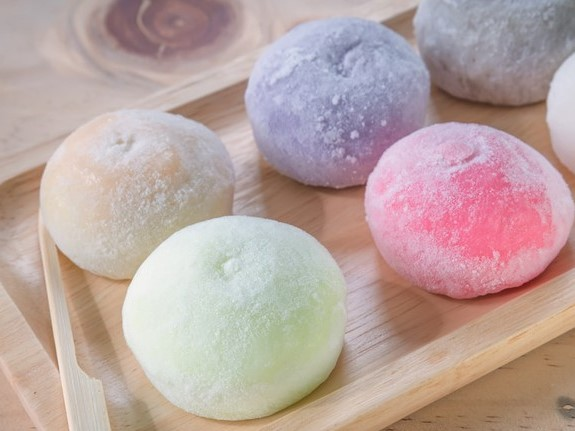
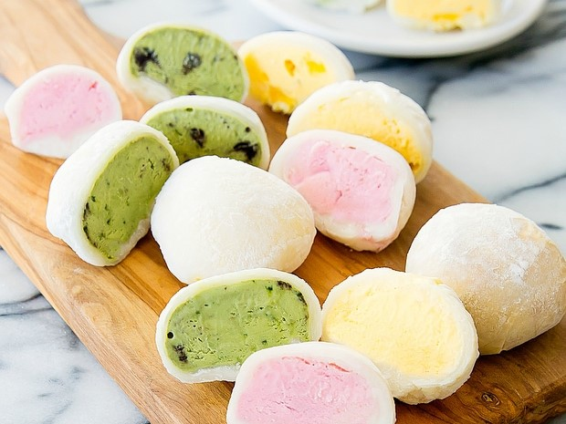
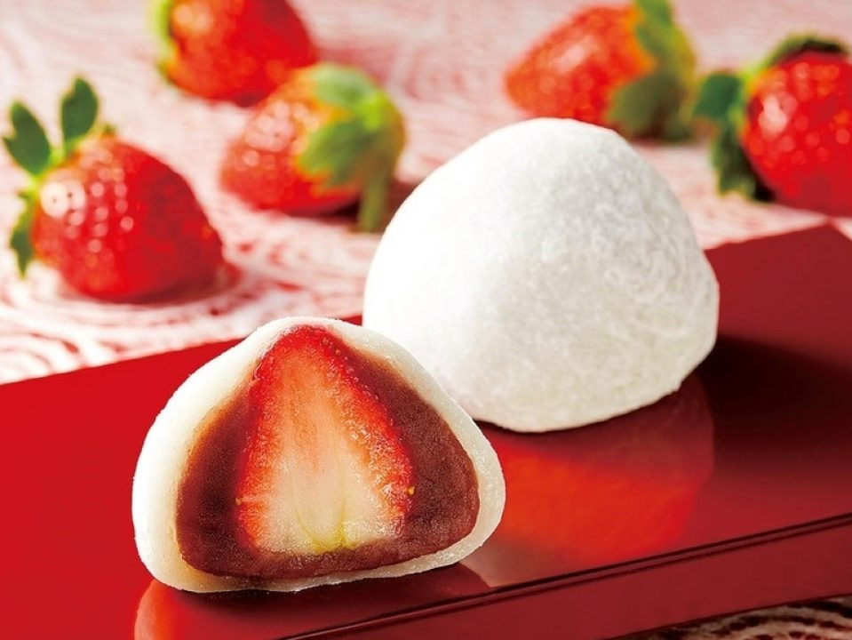
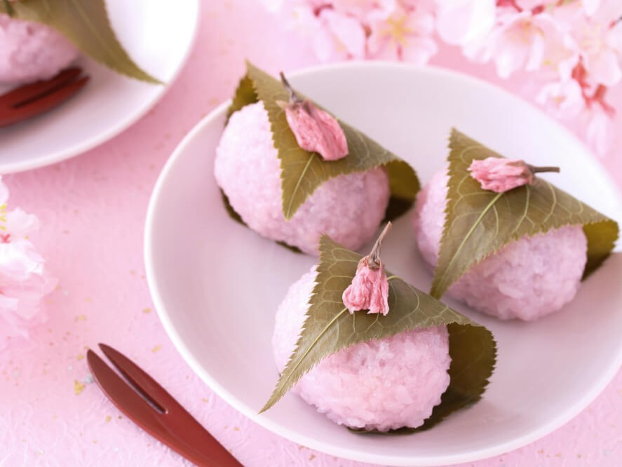
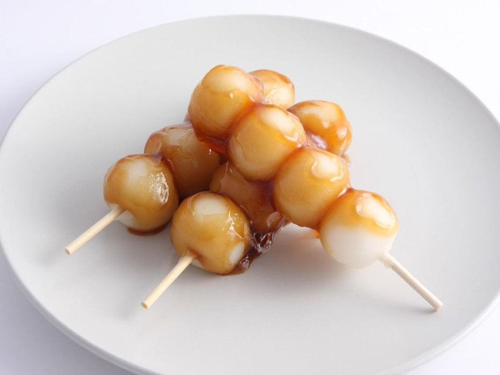
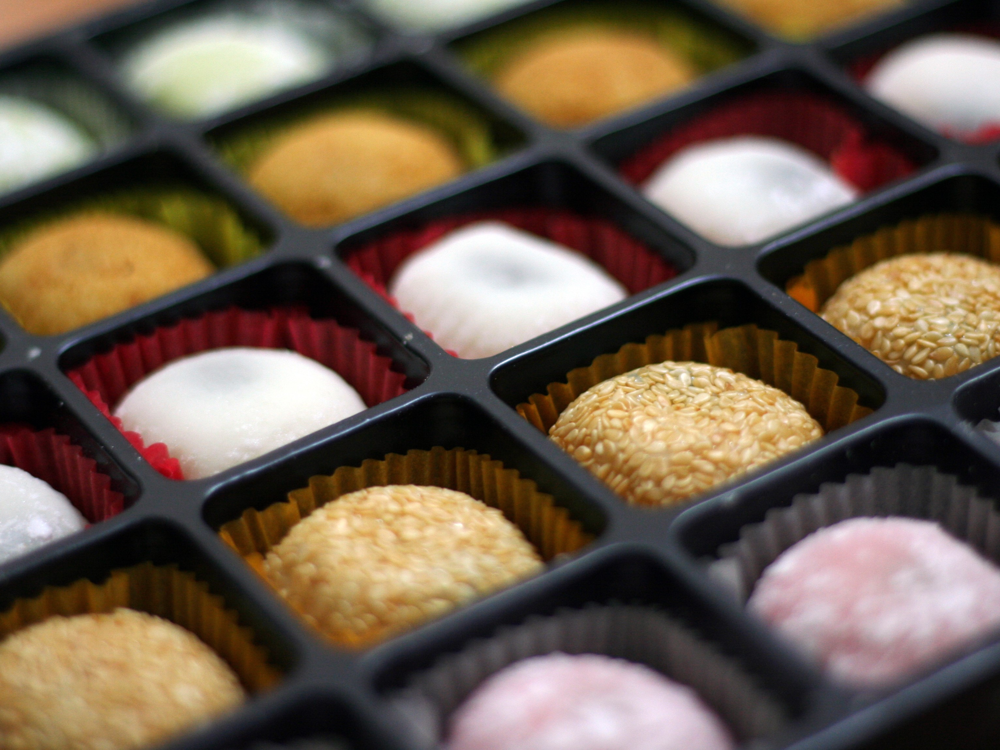

Types of Mochi
There are many different types of mochi enjoyed all over Japan for many centuries and different types are eaten in many different occasions. It has a soft and sticky texture and it can usually be eaten within one to a few bites! Here are several example types of different types of mochi!
Different Types of Mochi
Regular Mochi

Regular Mochi
Many flavours such as mango, vanilla, chocolate and many more!
Ice Cream Mochi

Ice Cream Mochi
Ice Cream Mochi has any flavoured ice cream within the middle!
Daifuku Mochi

Daifuku Mochi
Daifuku Mochi usually has red-bean or Anko filling with a strawberry!
Sakura Mochi

Sakura Mochi
Sakura Mochi is filled with red bean paste and wrapped with a salty pickled cherry leaf!
Dango Mochi

Daifuku Mochi
Dango is soft and usually sweetened with sugar!
And many more!
" width = "100%" height = "100%">
And many more!
There are many other types of mochi! Please click here for more!